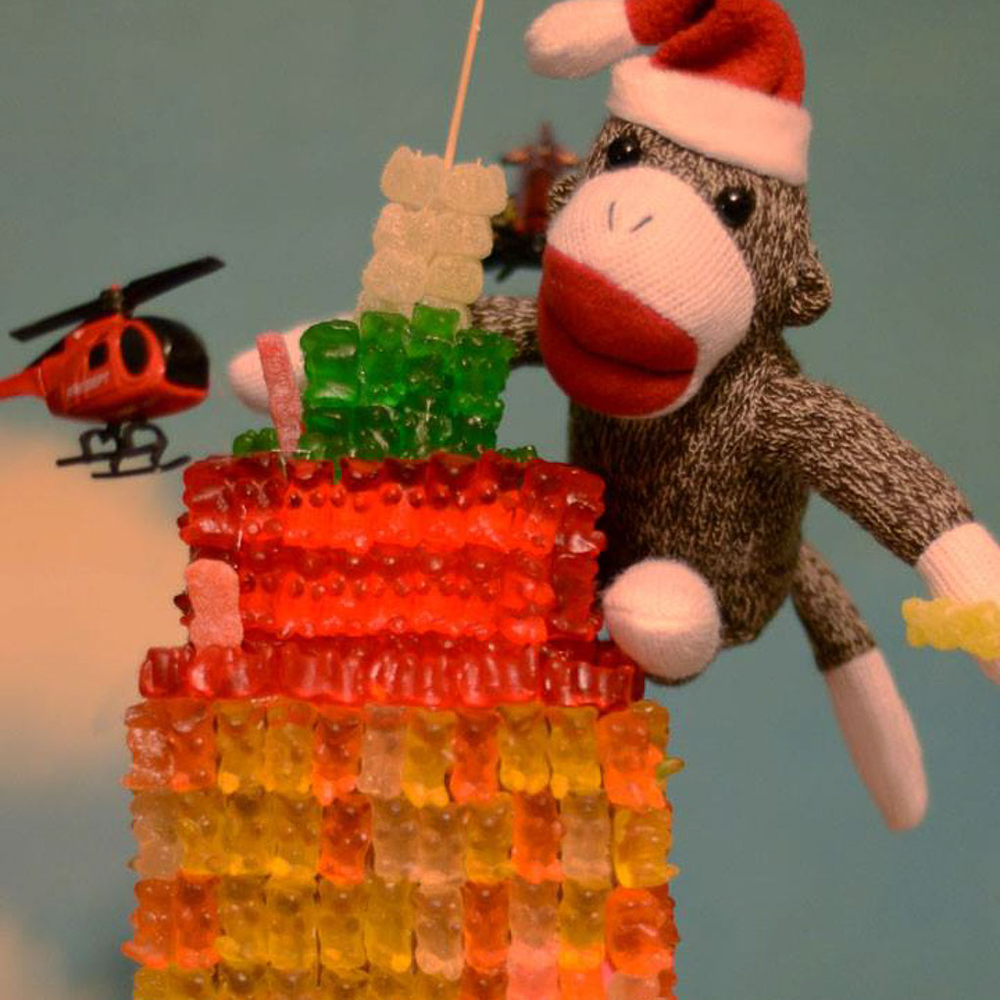

Extra-Curriculars
Volunteer work
- Middle School Youth Group Volunteer
- Contributed to engaging and impactful activities for a diverse group of middle school students, promoting personal growth and fostering a sense of community.
- Sunday School Teacher
- Increased student participation and learning by developing and implementing engaging lesson plans that fostered spiritual growth and moral development.
- Homeless Outreach
- Contributed to the local community by dedicating my time listening to, advising, and supporting the unhoused.
Hobbies

GISH: the Greatest International Scavenger Hunt